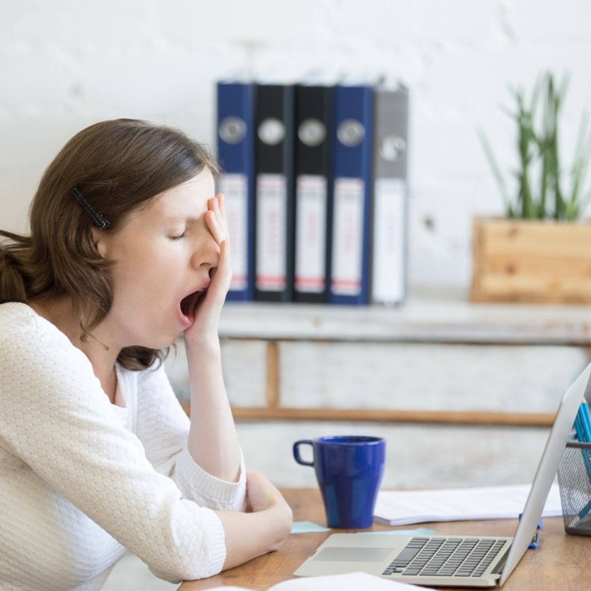

They call me a mad man for sleeping at 12:30 AM in a boys hostel back in college but they havent seen all the Youtube videos on how benificial sleep is that I have. Most of us spend precious time before bed scrolling through social media or watching videos. Here are a few points that might just convince you to skip out on some of those videos.
Stages of Sleep
There are 4 stages of sleep , NREM stage1, NREM stage 2, NREM stage 3 and REM sleep. It is important to realize that sleep does not progress through these stages in sequence.
Sleep begins in stage 1 and progresses into stages 2, and 3. After stage 3 sleep, stage 2 sleep is repeated before entering REM sleep.
Once REM sleep
is over, the body usually returns to stage 2 sleep. Sleep cycles through these stages approximately four or five times throughout the night. Dreams occour
during REM sleep.
How much sleep do you need?
How much sleep you need depends on your age, physical activity levels, and general health.
Children and teenagers need 9–10 hours of sleep a night. Younger children tend to go to sleep earlier and wake earlier. As children grow into teenagers,
they seem to get tired later and sleep in later.
Adults need around 7-9 hours of sleep each night.br>
You better be getting in enough sleep. Consistently sleeping lesser than you should is associated with a number of adverse health effects.
Sleep and moods
Think about how one bad night’s sleep, or not enough sleep, makes you feel the next day. For many of us, we’re grumpy and irritable
and we have no energy. We can overreact when things don’t go our way, and we may find we’re less excited if something good happens.
So it is easy to see how ongoing sleeplessness can be a worry. Long term sleep deficiency can significantly affect your mood. Sleeplessness and mood
disorders are closely linked and it can work both ways – sleep loss can affect your mood, and your mood can affect how much and how
well you sleep.
Studies show people who are sleep deprived report increases in negative moods (anger, frustration, irritability, sadness) and decreases in positive moods.
And sleeplessness is often a symptom of mood disorders, such as depression and anxiety. It can also raise the risk of, and even contribute to, developing
some mood disorders.
Blood Pressure
High blood pressure. During normal sleep, your blood pressure goes down. Having sleep problems means your blood pressure stays higher for a longer amount of time. High blood pressure is one of the leading risks for heart disease and stroke. About 75 million Americans—one in three adults—have high blood pressure.
Stress
When your body is sleep deficient, it goes into a state of stress. The body's functions are put on high alert, which causes high blood pressure and the production of stress hormones. High blood pressure increases your risk for heart attack and stroke, and the stress hormones make it harder to fall asleep.
Smaller Testicles
A study showed that Men with the poorest quality sleep had testes that were significantly smaller than men with the highest quality sleep.
Concentration
Scientists measuring sleepiness have found that sleep deprivation leads to lower alertness and concentration. It’s more difficult to focus and pay attention, so you’re more easily confused. This hampers your ability to perform tasks that require logical reasoning or complex thought. Sleepiness also impairs judgment. Making decisions is more difficult because you can’t assess situations as well and pick the right behavior. 
Learning
Sleep deprivation affects your ability to learn in two ways. Because you can’t focus as well, it’s more difficult to pick up information, so you can’t learn efficiently. It also affects memory, which is essential to learning. In children, sleepiness can lead to hyperactivity, also hampering learning. Teens may lose the focus, diligence, and memory capacity to perform well in school.
Reaction time
Sleepiness makes your reaction time slower, a special problem when driving or doing work or other tasks that require a quick response. The National Highway
Traffic Safety Administration conservatively estimates that at least 100,000 crashes reported to police each year are due to driver fatigue. Other
estimates put that number at 1 million this is 20% of all crashes in America.
You don’t need to fall asleep at the wheel to be a danger, drowsiness alone can be as dangerous as driving drunk. Driving while sleepy is like driving
with a blood alcohol content of .08%, for reference the blood alcohol content (BAC) legal limit is 0.03% in India.
Fat Loss
A study from 2018 had a group of participants on a calorie restricted diet. they set up 2 groups, one that slept normal hours and one that slept one hour
less per night. Both groups lost equal amounts of weight but the group that slept enough hours lost almost 83% of that weight in fat while the other group
lost 85% of that weight in lean mass (includes glycogen stored in muscle) and muscle.
Leptin tells your brain that you’ve had enough to eat. Without enough sleep, your brain reduces leptin and raises ghrelin, which is an appetite stimulant.
The flux of these hormones could explain nighttime snacking or why someone may overeat later in the night.
Conclusion
Sleep deprivation can have important consequences on your health, and, in extreme situations, may even lead to death. While you can negate the effects of
short term sleep deprivation, it is hard to know whether you can make up for sleep you lost months or years ago.
If you struggle to get sufficient sleep, talk to your doctor so you can get professional help with your sleep deprivation. Whether your lack of sleep
is due to a lifestyle issue or a health issue, your medical team can help you come up with a plan so that you will be able to get enough sleep.
BlogSpot